Contents
Q2
Q2 a
By trying out a few values, we finalised a threshold of 13 for preserving the hands and the statue.
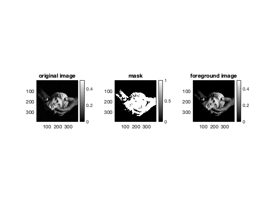Q2 b
We use a 5 percentile-95 percentile strategy. Let:
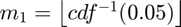 and 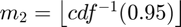 where cdf is the cumulative distribution function of the image intensities.
The transformaton function is: 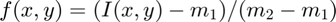 where I(x,y) denotes the pixel intensity of pixel (x,y).
Values below 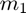 and above 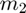 are mapped to 0 and 255 respectively.
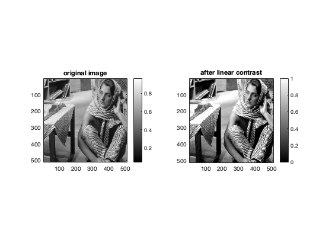 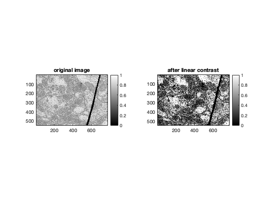 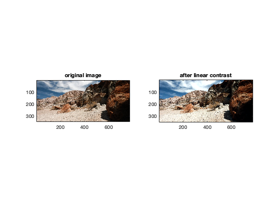 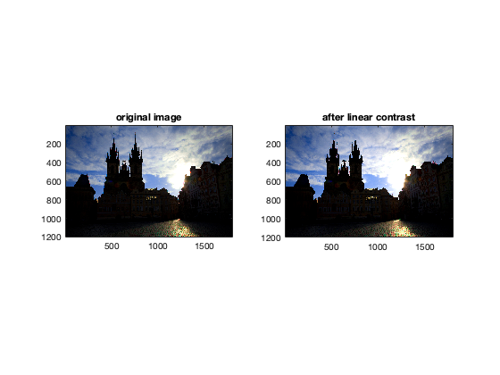 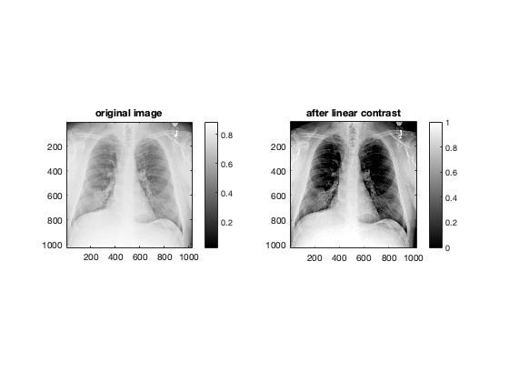 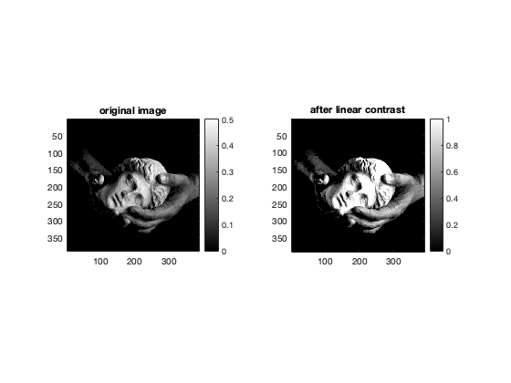References:
- Colormap: https://www.mathworks.com/help/matlab/ref/gray.html
- imhist function: https://in.mathworks.com/help/images/ref/imhist.html
- Calculation of CDF: https://in.mathworks.com/help/matlab/ref/cumsum.html
Contrast stretching is not effective in image 5 because it contains many high-intensity pixels (close to 255) and many dark pixels (close to 0).
As a result,  and 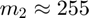, which results in a linear function equivalent to the identity mapping.
and 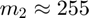, which results in a linear function equivalent to the identity mapping.
Q2 c
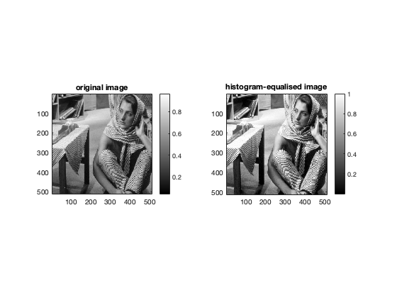 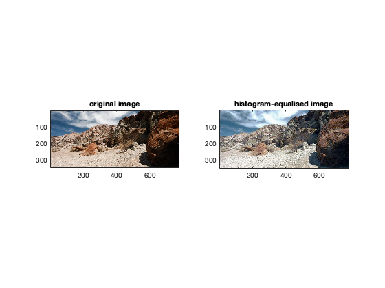 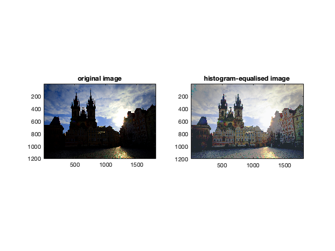 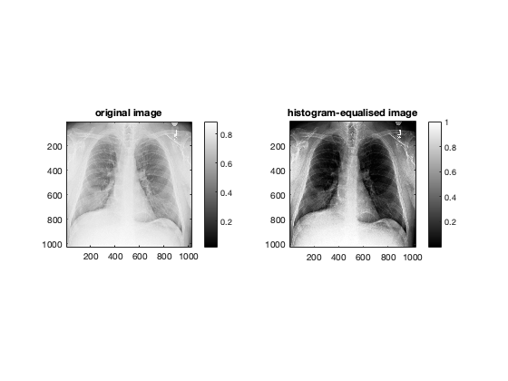 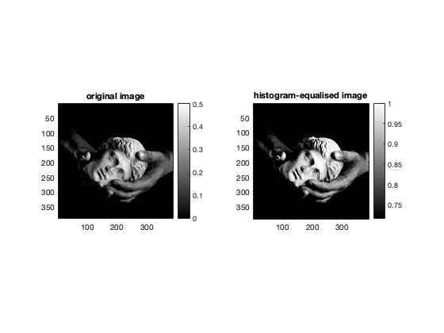On applying HE on image 5, we get a much better result as compared to Linear Contrast Stretching.
Contrast significantly improves after applying HE because the intensity values get more spread out wherever the pdf is concentrated.
In case of image 5, it is helpful because there are 2 peaks - at very dark pixels (~0) and very bright pixels (~255).
This can be verified by looking at the PDF of the 3 independent channels which is given below:
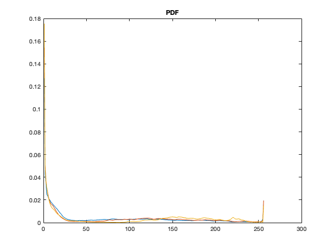Q2 d
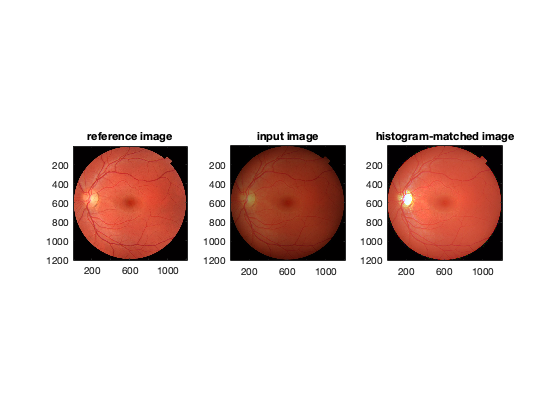On applying HM, the veins in the original image become more prominent.
However, on applying the algorithm to each channel separately, the bright spot on the left becomes even brighter and we lose information.
References:
- Filling missing values while calculating inverse: https://in.mathworks.com/help/matlab/ref/fillmissing.html
Q2 e
This part of the code takes more than 5 minutes
We carry out CLAHE with a window size of 11, 41, 81 as all 3 give signifciantly distinct outputs.
The thresholds chosen are 0.1 and 0.05 since they exhibit different outputs too!
Elapsed time is 925.348829 seconds.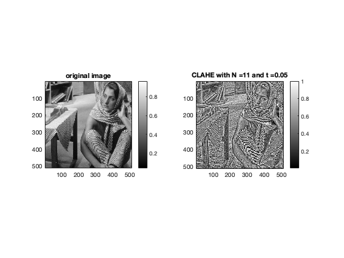
 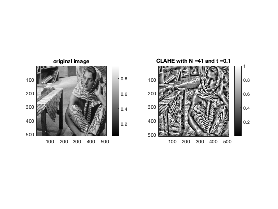 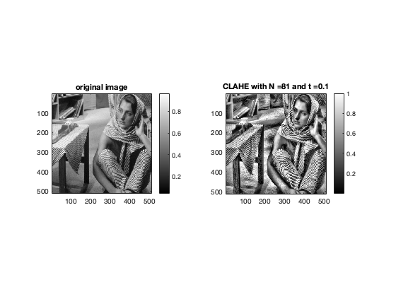 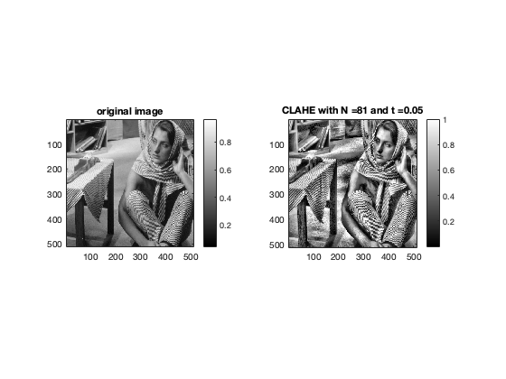 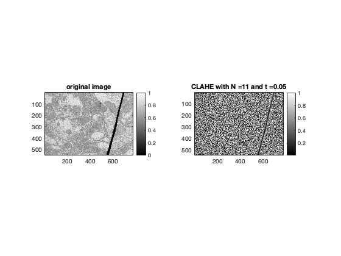 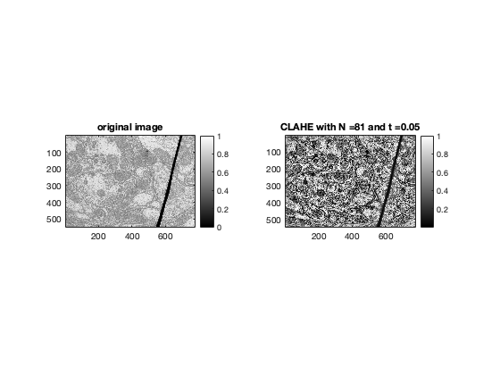 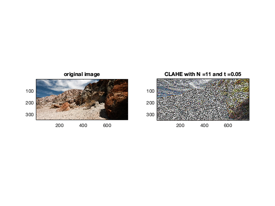 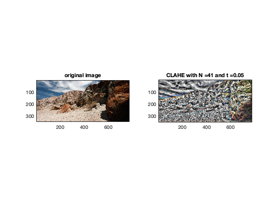 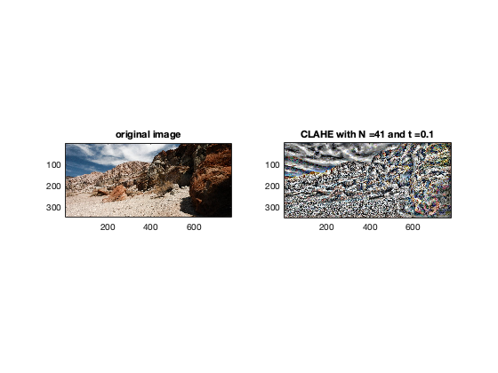 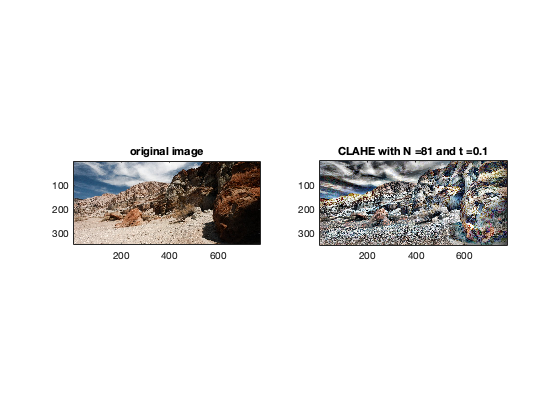 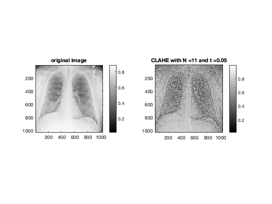 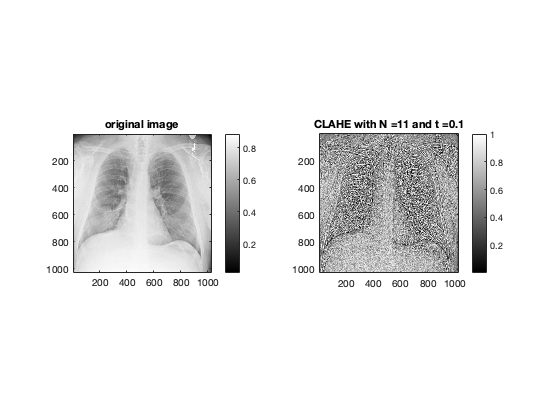
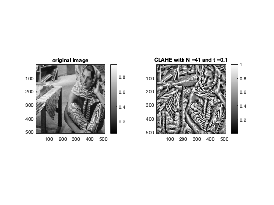 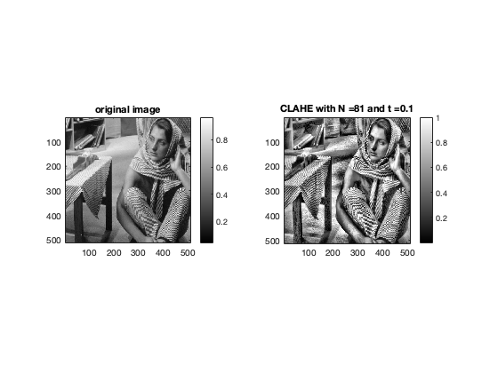 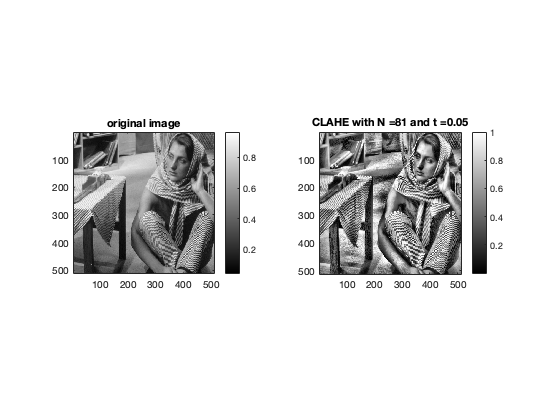 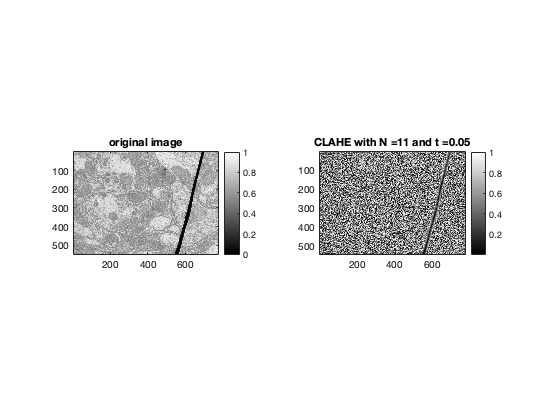 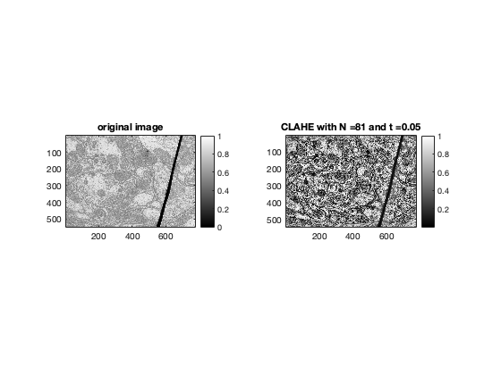 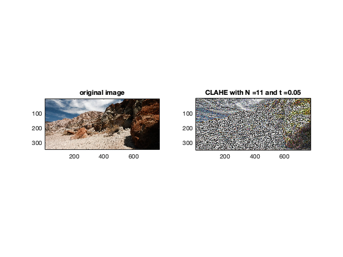 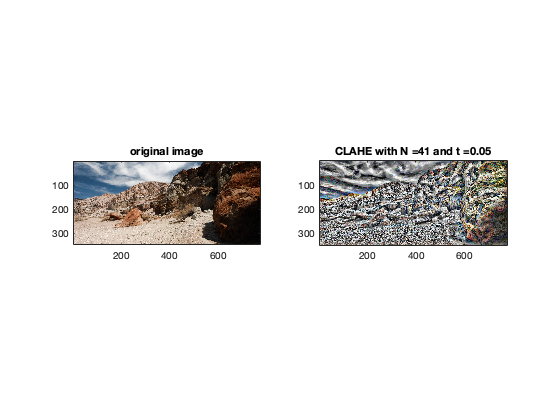 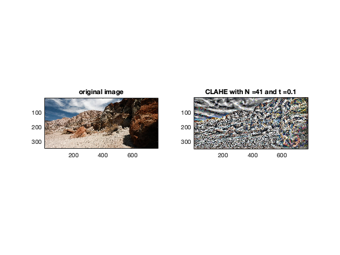 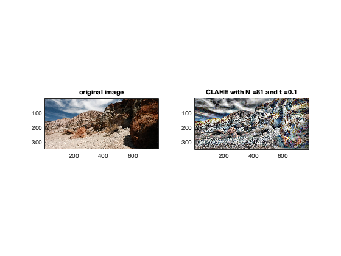 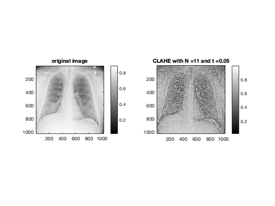 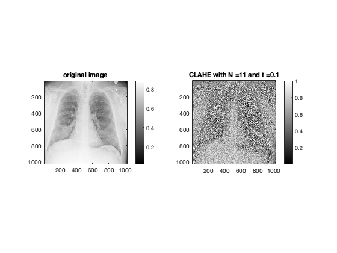 
We can observe that on increasing the window size, the noise decreases but at the cost of decrease in the local contrast
On the other hand, a higher threshold leads to higher noise while a lower threshold leads to a smoother image
References:
- nlfilt uses a sliding window approach to efficiently calculate a scalar value for centre pixel: https://in.mathworks.com/help/images/ref/nlfilter.html
- Nested function: https://in.mathworks.com/help/matlab/matlab_prog/nested-functions.html?s_tid=srchtitle